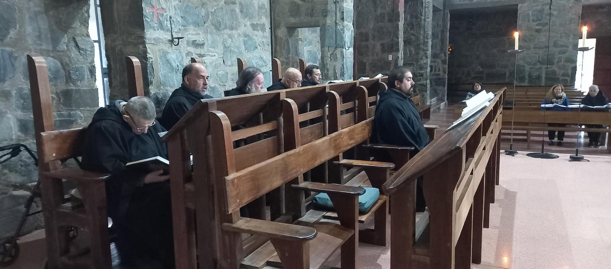

"Recíbanse a todos los huéspedes que llegan como a Cristo, pues Él mismo ha de decir: "Huésped fui y me recibieron" (Mt 25,35)" (RB. LIII).
El monasterio cuenta con una hospedería para varones, ofreciendo un ambiente de silencio, soledad y oración, propicio para la lectura, la meditación y el encuentro con Dios.
Dicha hospedería consta de una pequeña cocina compartida, en la cual el huésped hallará lo necesario para el desayuno y la merienda. Los cuartos tienen baño privado y agua caliente, y constan de un armario, una mesa, una lámpara, una silla y una Biblia. Nuestra hospedería es de un estilo sobrio y austero.
.jpg)
Los huéspedes son invitados a participar de los diversos oficios litúrgicos en la Iglesia del Monasterio, siendo el más importante la Eucaristía, que celebramos diariamente. Asimismo, comparten con los monjes el almuerzo y la cena en el comedor, integrándose en nuestro ritmo diario tanto de oración como de comidas.
Como hospedería monástica, intentamos brindar un espacio de acogida a la vez fraterna y discreta, sencilla y amable, para quienes llegan al monasterio buscando a Dios, o para quienes se acercan cansados por las fatigas diarias y las preocupaciones de la vida, deseando hallar algo de aquella Paz que sólo Dios puede brindar. Si en algo podemos contribuir a esto, nuestro servicio en el Señor está realizado.
.PNG)

.jpg)
¡Contáctanos!
Para más información, escríbenos a: